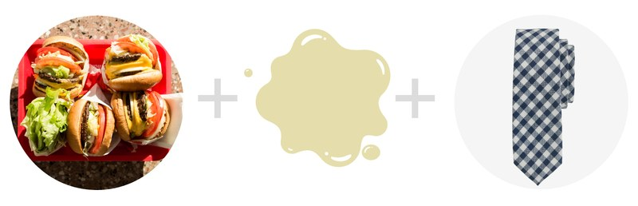

Mẹo xử lý 5 vết bẩn cứng đầu thường gặp trên trang phục
Chúng “đánh” bạn một cú bất ngờ trên đường đi làm, làm phá hủy một buổi sáng hoàn hảo của bạn. Chúng là nguyên nhân gây nên sự bối rối tại một bữa trưa kinh doanh hay một buổi tối hẹn hò Tinder (Ứng dụng hẹn hò phổ biến tại châu Âu). Thời gian chúng đến thực sự “hoàn hảo”: khi mà bạn có một buổi phỏng vấn xin việc vào 10:00 thì cốc sinh tố đổ ngay vào quần bạn lúc 9:45. Thứ mà Remmy đang muốn nhắc đến ở đây chính là những vết bẩn, nó làm hỏng chiếc áo yêu thích nhất của bạn hay đe dọa đến bất cứ món đồ nào khác trong tủ đồ...

Tất nhiên, có rất nhiều cách để làm sạch các vết nhơ trên áo quần.
Nhưng bạn không cần khắc phục tất cả, bạn chỉ cần tìm cách giải quyết cho những bộ trang phục bạn hay gặp phải nhất.
#1. Cà phê + đôi giày Sneakers
Bạn đã kiểm tra thời gian trên đồng hồ những quên mất rằng đang cầm một cốc bia trên tay hay tồi tệ hơn là một cốc cà phê, và giờ chiếc giày của bạn đã chuyển sang màu nâu.
Dưới đây là những điều cần làm khi bạn đang ở nơi nào gần phòng tắm:Lấy một khăn ăn hoặc khăn giấy và thoa các khu vực bị ảnh hưởng.
Hãy nhớ: không chà xát vết bẩn, việc đó sẽ làm cho nó lây lan. Rửa các vết bẩn từ mặt trong.
Lau vết bẩn với khăn giấy. Lặp lại nếu cần thiết. Khi bạn có nhiều thời gian, xử lí các vết bẩn còn lại với một hỗn hợp của nước lạnh, bột giặt, chất tẩy rửa và dấm trắng.
Trộn hỗn hợp rồi xoa đều lên vết bẩn, chờ 5-10 phút. Sử dụng bạn chải đánh răng cũ chà lên vết bẩn theo hình tròn, nhớ là chà cả mặt trong và ngoài của giày. Rửa sạch.
Sử dụng ¼ hỗn hợp đó để giặt sản phẩm trong máy giặt bằng nước lạnh. Lặp lại quá trình này nếu vết vẫn tồn tại.
Nếu các vết bẩn đã hết, sấy khô giày.
#2. Rượu vang đỏ + áo sơ mi Oxford
Rượu vang đỏ thường được coi là một trong các vết bẩn khó tẩy rửa nhất. Sử dụng khăn giấy để thấm đi càng nhiều rượu càng tốt.
Lấy một ít muối (bất cứ loại nào cũng được) và phủ lên trên các vết bẩn (Nếu các vết bẩn đã khô, hãy làm ướt chúng bằng nước lạnh).
Hãy để cho muối khô hoàn toàn.
Loại bỏ phần muối dư thừa và giũ sạch chúng.
Giặt áo bằng nước lạnh và nước giặt.
Nếu điều đó vẫn không hiệu quả, hãy ngâm áo trong hỗn hợp nước rửa bát và hydrogen peroxide trong vài giờ.
Giặt lại một lần nữa.
#3. Mỡ Burger + Cavat

Bánh mì kẹp burger kẹp khá mỡ nhưng lại ngon, do đó, bất cứ lúc nào bạn bước đến một patty đẫm pho mát với thịt xông khói,
thì là lúc bạn đặt tủ quần áo của vào nguy cơ đối mặt với rất nhiều vết bẩn dầu mỡ.
Nếu có một vết mỡ khô, hãy loại bỏ chúng một cách nhẹ nhàng .Trộn nước rửa bát thiên nhiên với nước ấm.
Để cavat của bạn trong một cái bát. Vò nhẹ nhàng phần dính bẩn của cavat với hỗn hợp đã hòa trộn ở trên.
Lặp lại cho đến khi dầu mỡ đã hòa tan hoàn toàn. Lau lại phần dính bẩn với khăn ẩm (sử dụng nước lanh).
Sấy khô.
#4. Vết máu + quần Jean
Ngâm các vết bẩn trong nước muối lạnh qua đêm (Bất cứ loại muối nào cũng được).
Sử dụng xà phòng rửa tay, thanh xà phòng hoặc chất tẩy rửa dạng lỏng (bất cứ loại nào cũng được) để chà lên vết bẩn.
Lặp lại cho đến khi vết bẩn biến mất. Giặt sản phẩm bằng nước lạnh. Sấy khô.
#5. Vết mực + quần Suit
Lấy khăn giấy, ấn vào phần mực dây để loại bỏ một phần vết bẩn.
Rắc lên chỗ bẩn tinh bột ngô, phấn rôm trẻ em, để yên trong vài tiếng. Không chùi hay chà xát vì sẽ khiến vết bẩn lan rộng.
Phủi đi phần bột thừa và ủy thác phần còn lại cho tiệm giặt ủi.